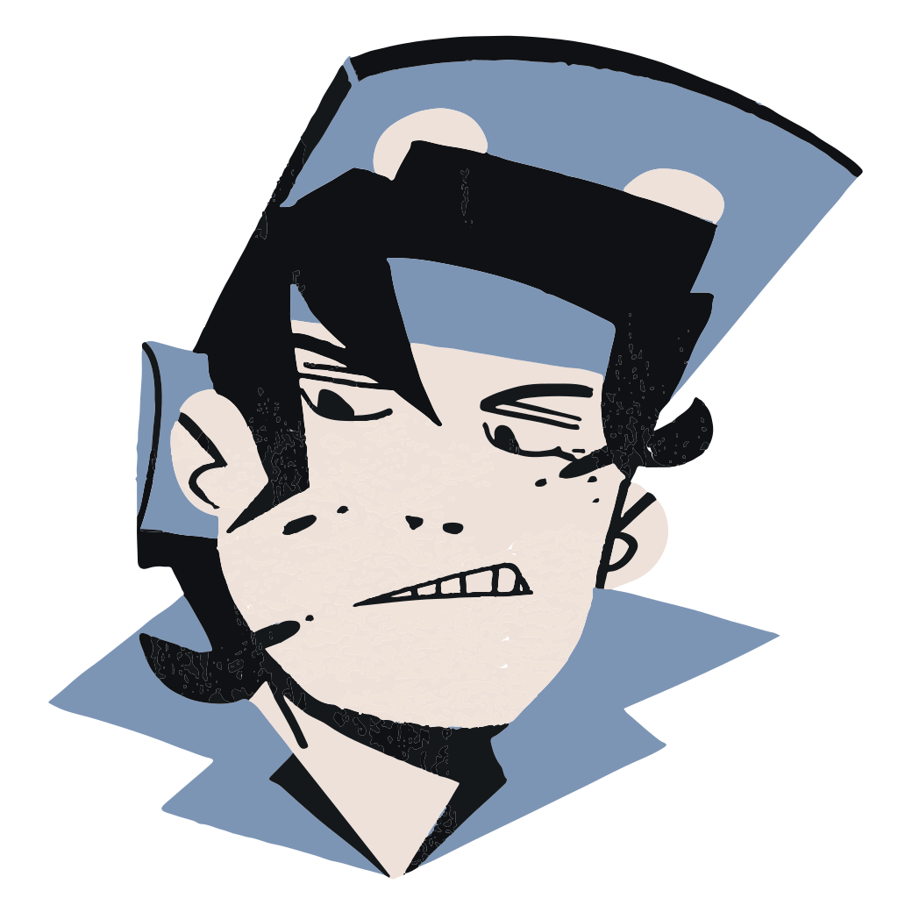
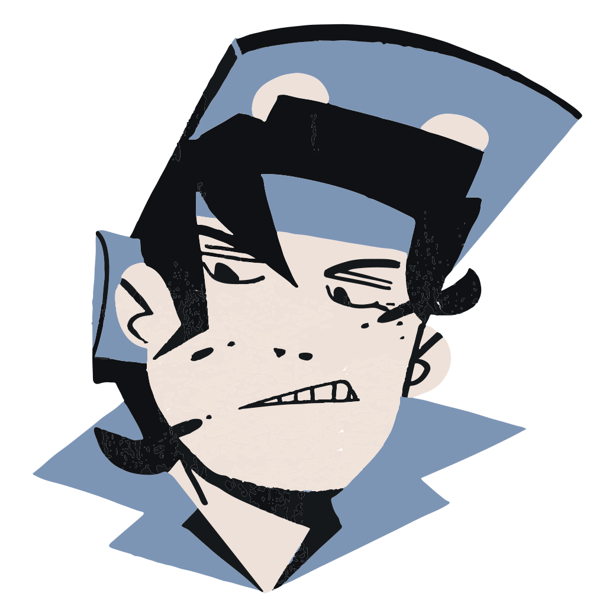
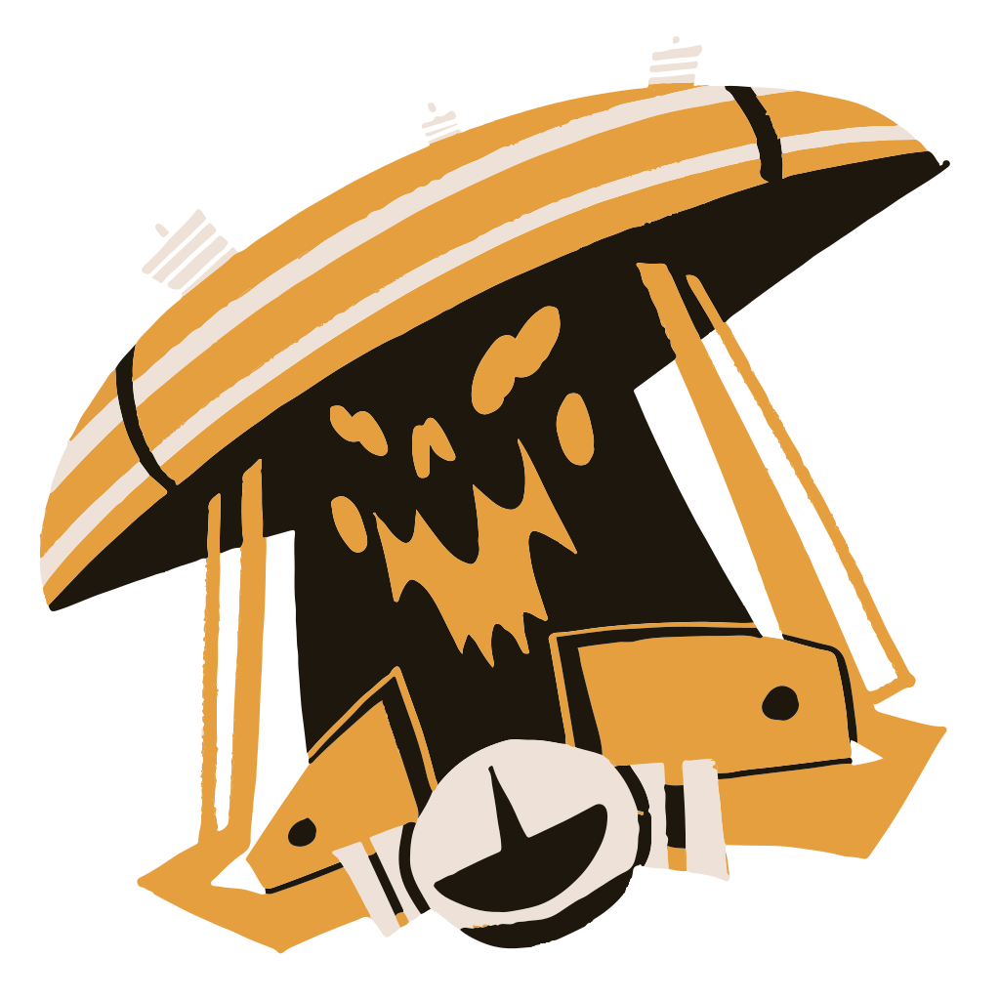
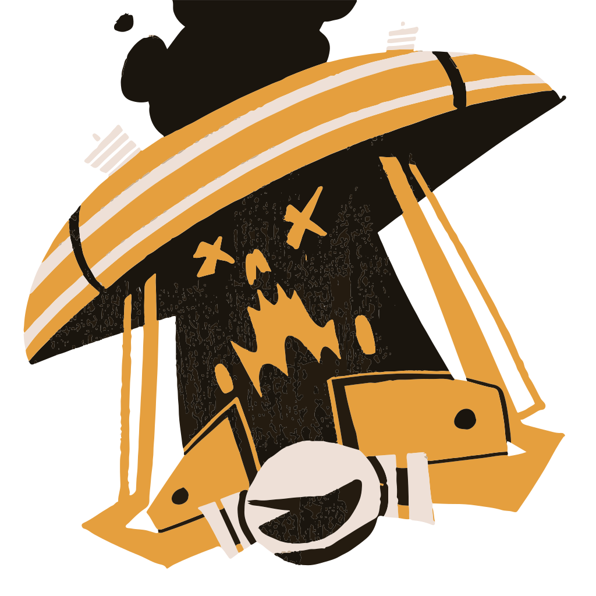
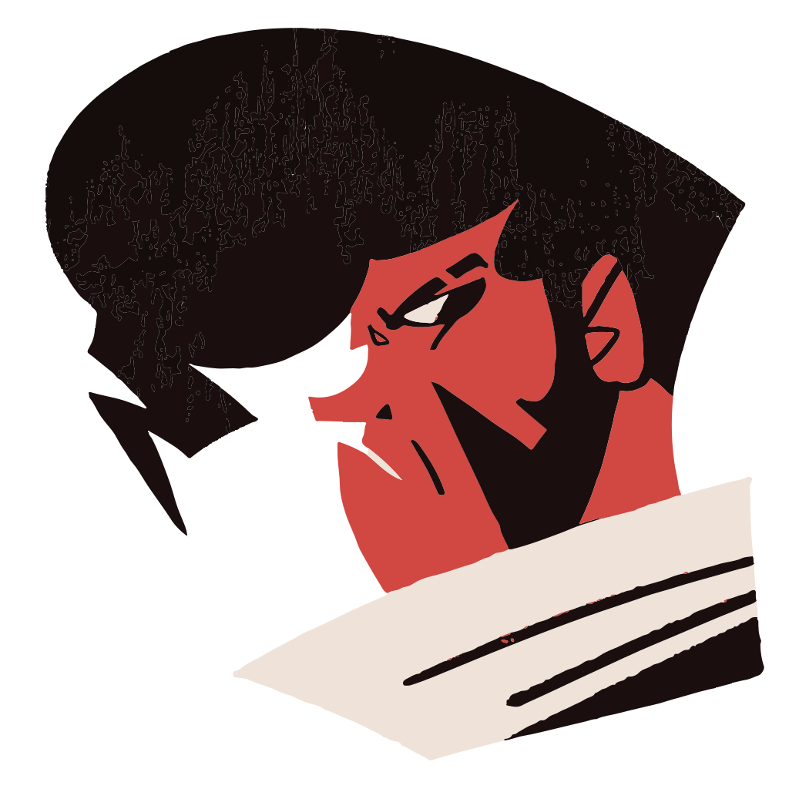
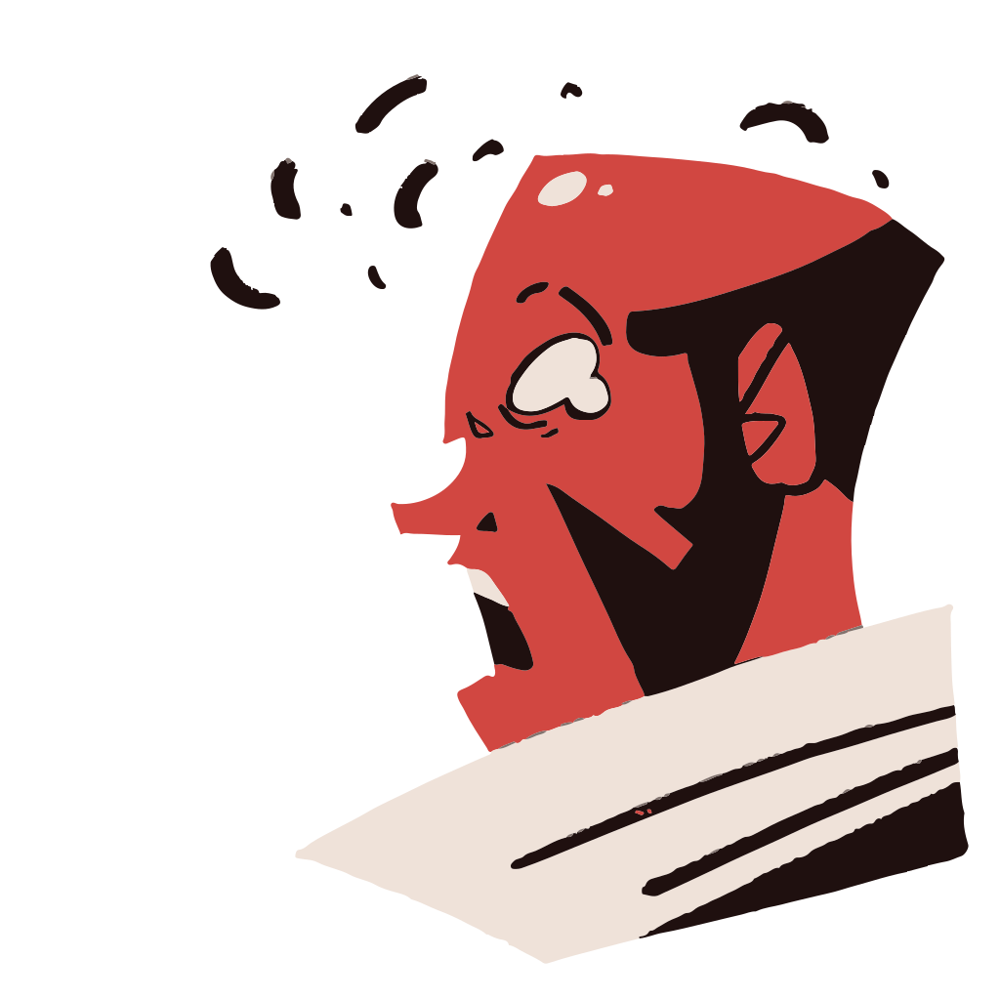

McGinnis
McGinnis is an engineer-type character that uses machinery like turrets and healing pylons to dominate the field.
When McGinnis is defeated, her machines blow up in her face in a cartoonish manner.
Deadlock is a multiplayer game created by Valve Software that falls into the Multiplayer Online Battle Arena genre, a type of game where you pick a character with a specialized toolset (often called a champion or in this case a Hero) and you use this character on a large map to destroy an enemy team's base and defenses in an effort to destroy their flagship monster — in Deadlock, this takes the form of a mysterious all-powerful entity known as "The Patron"
Deadlock TOASTED is a currently on-going mod project between myself and a friend to replace the currently existing in-game icons with cartoony versions of the Heroes that I have illustrated, that as well are reactive to changes in the game — namely when the character is defeated in combat. Below are three examples of the characters normal icon, and their defeated icon with a brief explanation.
McGinnis is an engineer-type character that uses machinery like turrets and healing pylons to dominate the field.
When McGinnis is defeated, her machines blow up in her face in a cartoonish manner.
Seven is a death-row inmate who merged with his electric chair and harnesses its deadly power to fight foes.
When Seven is defeated, he short-circuts, and plumes of smoke pour out.
Shiv is a delinquent turned supernatural monster hunter with an unorthadoxed sense of style - both fighting, and fashion.
When Shiv is defeated, he loses his pompadour in a close shave.
